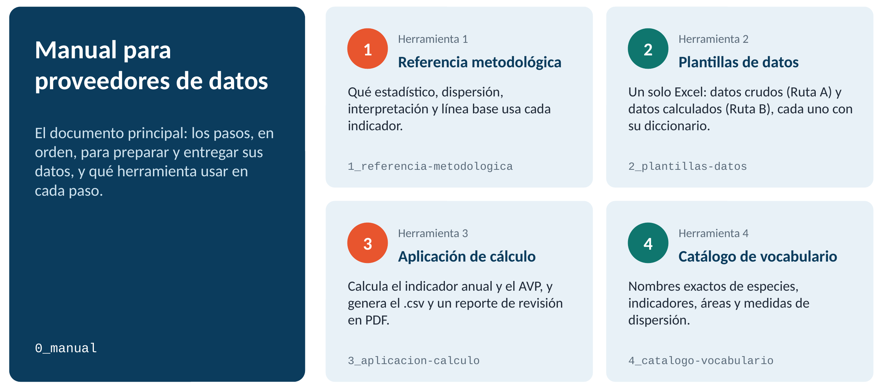
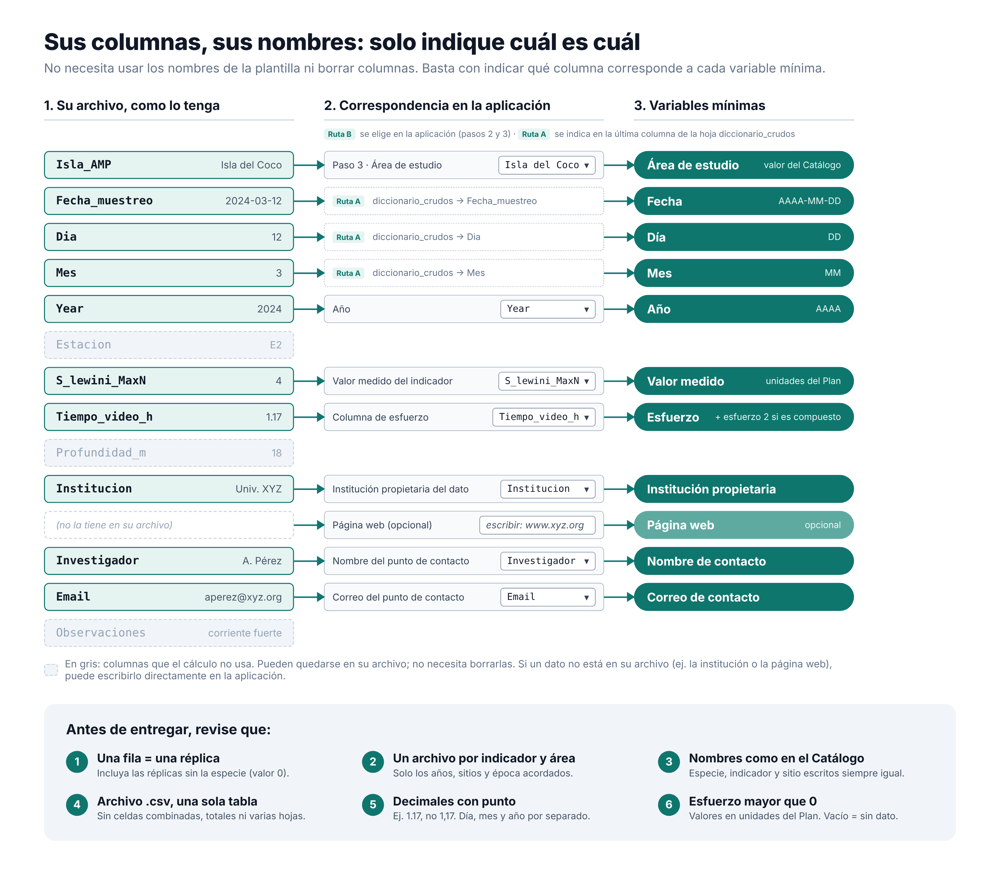
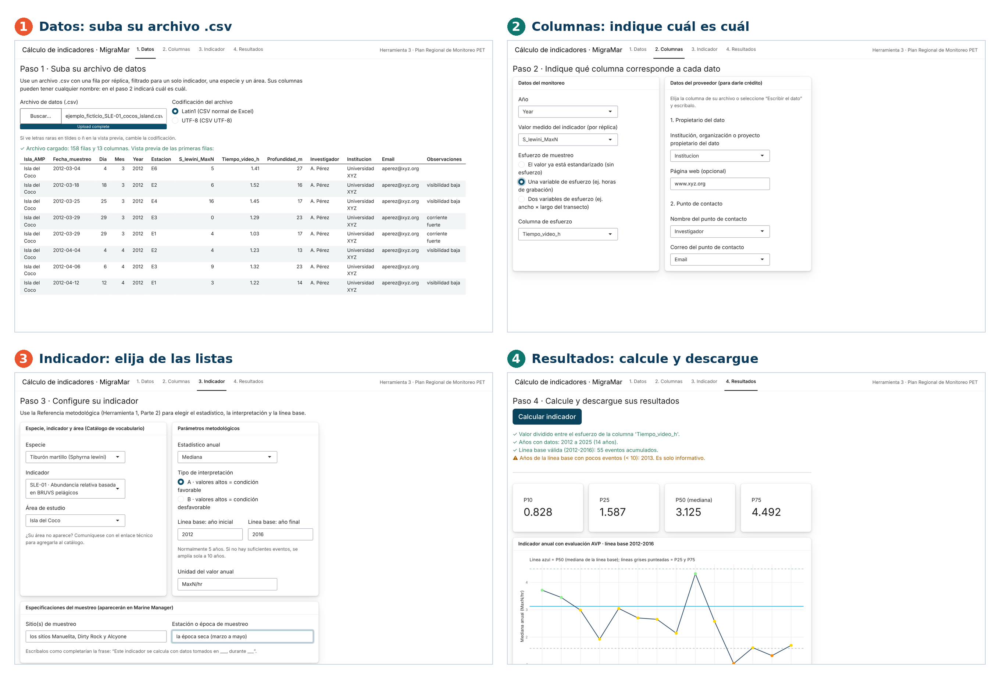

Manual para proveedores de datos
Pasos operativos · Versión del 27 de octubre de 2026
Este manual resume, en pasos concretos, lo que debe hacer para entregarnos sus datos. Para el detalle completo de la metodología, consulte el Plan Regional de Monitoreo.
Mientras este manual indica los pasos a seguir, la Referencia metodológica (Herramienta 1) aporta el detalle metodológico específico de su indicador.
Etapa 1 · Antes de empezar
1. Ubique la carpeta que MigraMar le compartió para entregar sus datos (su carpeta de recepción).
2. Decida su ruta:
- Ruta A: usted entrega datos crudos (tal como los recolectó en campo, ya depurados y cumpliendo los requisitos del punto 4) y MigraMar calcula el indicador.
- Ruta B: usted calcula su propio indicador, con la aplicación de cálculo que le facilita MigraMar o con su propio método, y entrega el resultado ya calculado.
| Ruta A · datos crudos | Ruta B · datos calculados | |
|---|---|---|
| Archivo que entrega | Datos crudos con columnas mínimas y filtradas para cada indicador (ver punto 4) | Datos en formato de la Plantilla de datos calculados |
| Diccionario de columnas | Sí, debe incluirlo (ver ejemplo en la Plantilla de datos) | No es necesario |
| Debe usar la aplicación de cálculo (Herramienta 3) | No | Sí |
| Quién calcula el indicador | MigraMar, pero se generará un reporte que debe verificar antes de publicar en Marine Manager | Usted |
| Qué herramientas requiero revisar | Herramientas 1, 2 y 4 | Herramientas 1, 2, 3 y 4 |
3. Descargue de la Caja de herramientas lo que le corresponda (Fig. 1):
- Herramienta 1: Referencia metodológica. Le dice qué especificaciones aplican a su indicador; la necesitará para completar sus datos y, si le corresponde, para configurar la aplicación de cálculo para su indicador específico.
- Herramienta 2: Plantillas de datos. Un solo Excel con las hojas diccionario_crudos, datos_crudos, diccionario_calculados y datos_calculados; útil para ambas rutas.
- Herramienta 3: Aplicación de cálculo. Solo Ruta B. Si le interesa revisar la programación, puede leer el código en R (opcional).
- Herramienta 4: Catálogo de vocabulario controlado. Siempre (nombres exactos de especie, indicador y sitio).

Etapa 2 · Prepare sus datos
4. Prepare sus datos:
- Proveer todo su historial de datos en un solo archivo por indicador y área de estudio acordado. Debe filtrar sus datos para incluir solamente los datos que fueron colectados año tras año de forma consistente y bajo un mismo estándar; por lo tanto, el archivo debe incluir solo el rango de años, las estaciones del año y los sitios acordados con MigraMar.
5. Revise su archivo antes de continuar, independientemente de si toma la Ruta A o B:
Un archivo por indicador y área · una fila por réplica · solo los años, sitios y época acordados.
Contenido del archivo
Formato
Valores

6A. Si entrega datos crudos (Ruta A)
- Su archivo puede tener todas las columnas adicionales que usted maneje normalmente. Solo necesitamos que especifique cuáles corresponden a las mínimas esperadas de la hoja datos_crudos (Herramienta 2); para esto use la última columna de la hoja diccionario_crudos.
- Ya puede pasar a la Etapa 3: MigraMar calculará el indicador por usted.
6B. Si calcula sus propios indicadores (Ruta B)
La aplicación permite:
- estimar el valor anual del indicador;
- evaluar el indicador respecto a la línea base, cuando aplique;
- generar un archivo .csv en el formato requerido para el Marine Manager de Global Fishing Watch;
- generar un reporte de revisión en PDF que muestra cómo se verá su indicador en Marine Manager.
Para usar la aplicación de cálculo que le facilita MigraMar (Fig. 3):
i) Abra la aplicación (Herramienta 3) de una de estas dos formas:
En línea, sin instalar nada (recomendado). La aplicación corre dentro de su navegador: los archivos que cargue no se envían a ningún servidor. La primera vez tarda entre 30 y 60 segundos en abrir.
En RStudio. Descargue el archivo app.R y el Catálogo de vocabulario desde Herramientas, guárdelos en una misma carpeta, abra app.R en RStudio y haga clic en “Run App”.
ii) Paso 1 · Datos: cargue su archivo de datos crudos (.csv). Si quiere probar la aplicación antes de usar sus datos, puede usar el archivo de ejemplo (datos ficticios).
iii) Pasos 2 y 3 · Columnas e Indicador: indique qué columna de su archivo corresponde a cada dato y complete las opciones de su indicador.
- Use la Referencia metodológica (Parte 2 · Lista de detalles metodológicos por indicador) para saber qué estadístico anual usar (mediana, promedio o valor directo), cuántos años de línea base necesita indicar y las demás especificaciones correspondientes a su indicador.
- La especie, el indicador y el área se eligen de listas tomadas del Catálogo de vocabulario (Herramienta 4).
iv) Paso 4 · Resultados: haga clic en “Calcular indicador” y revise los mensajes, el gráfico y las tablas.
v) Descargue el archivo .csv con sus resultados y el reporte de revisión en PDF. Revíselos y, si todo está bien, envíelos a MigraMar.

Etapa 3 · Nombre y organice sus archivos
7. Nombre su archivo de datos así:
Formato:
[id-indicador]_[area]_[tipo]_[fecha-entrega].csvEjemplo:
CMA-04_quinta-playa_calculado_2026-07-01.csvtipo = crudo o calculado · fecha-entrega = AAAA-MM-DD · use los valores del Catálogo de vocabulario para escribir la especie, el código de indicador y el área de estudio.
8. Reúna el resto de lo que debe entregar, si aplica a su caso:
- Logo de su afiliación.
- Protocolos de campo o de procesamiento de datos (opcional, pero muy recomendado).
- Archivo shape o coordenadas del sitio de monitoreo.
Etapa 4 · Entregue
9. Suba todo lo que preparó en la Etapa 3 a su carpeta de recepción.
10. Notifique por correo a MigraMar que subió sus archivos.
11. Espere el acuse de recibido. Si algo no cumple los estándares mínimos, se lo devolveremos indicando qué corregir.
Contáctenos: no dude en escribirnos si algún paso no le queda claro.